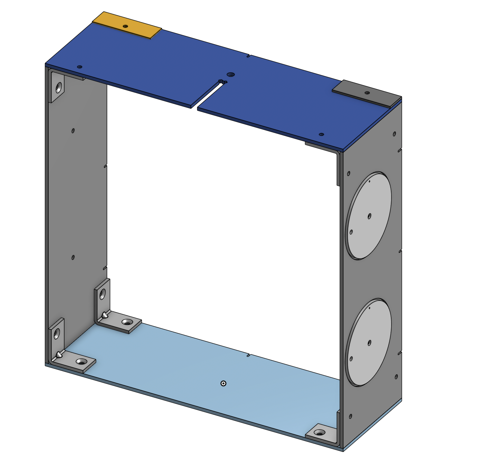
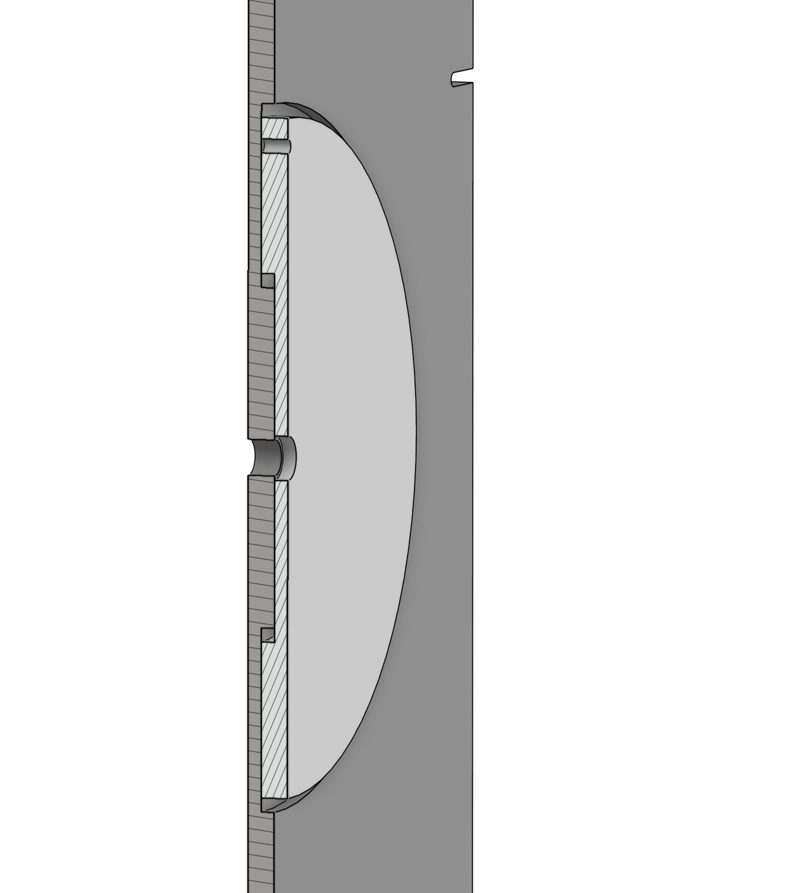
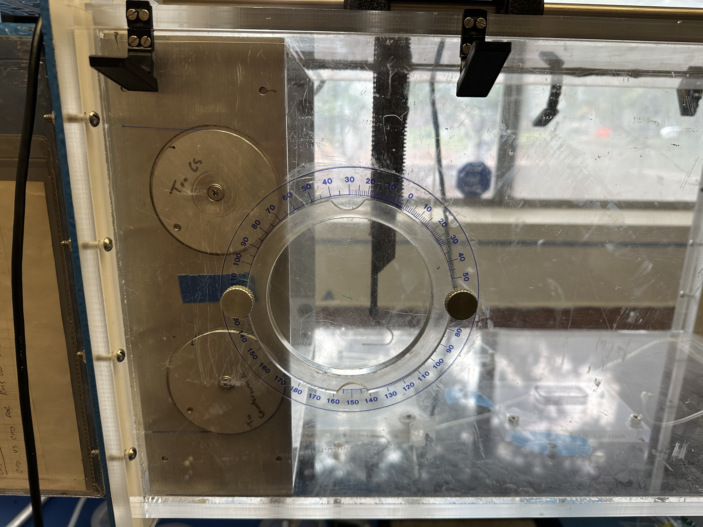
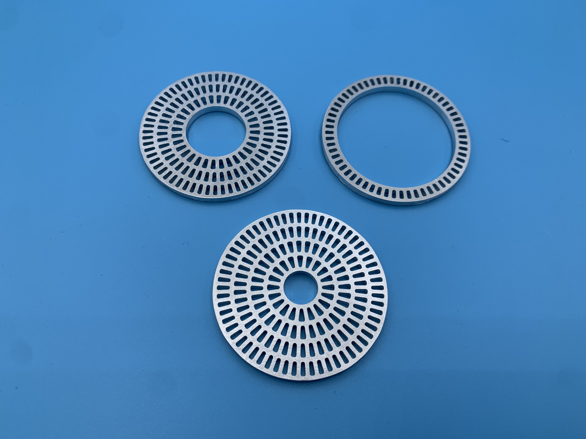

Wind Tunnel Frame
A graduate student who was trying to make a model for annular wakes asked us (CNSI workshop wizards) to redesign a wind tunnel frame to hold their samples in the wind tunnel. The original frame had a lot of issues which made it very time consuming and difficult to setup and have their sample be held perfectly in the center of the wind tunnel and prefectly orthogonal to the air flow. We took measurements of the inner chamber of the wind tunnel and the location of the pitot tube as it was slightly bent. In the original frame the sample is held with 4 fishing lines tied to each corner, which made it very difficult to adjust the location and angle of the sample relative to the airflow. The frame also had to take up a very small area of the wind tunnel, so we had to make the frame and whatever tensioning mechanism very thin.
We brainstormed ideas of how to fulfill the angle and position requirements and I came up with the idea of using big pulleys as tensioning rings which could be spun to tension the fishing line and then screwed down to lock the line in place. I also cut pockets in both the frame and the ring in order to keep the wall thickness as thin as possible, which you can see on the right.

Using four of these tensioning rings the researcher could easily adjust the location and deflection of the sample, reducing setup time and ensuring consistent and accurate results. I also saw an opportunity to use the pitot tube assembly in order to reference the position of the sample from the pitot tube rather than relying on the wind tunnel chamber walls being perfectly parallel to the airflow. To accomplish this I added a slot and a scew hole to the top plate which could be used to first align the frame and sample using the slot by putting the pitot tube assembly as close as possible and then using the hole screw the frame down.
The finished frame was given to the graduate student and they were and still are very happy with it. You can see it in action on the left and right.
I also machined some samples for them to test a couple months later which you can see below:
